Как удалить комментарии в Инстаграме: все способы

Удалить комментарий в Инстаграме* возможно с компьютерной и мобильной версии. Пользователю нужно перейти к публикации, где был оставлен отзыв.
Как удалить свой комментарий через телефон в Инстаграме*
Удалить ответ на комментарий или сам отзыв возможно через выделение текста и выбора соответствующей функции. Чтобы убрать комментарий, который был оставлен недавно:
- Перейти к публикации – нажать по тексту отзыва.
- Нажать сверху по значку в виде корзины.
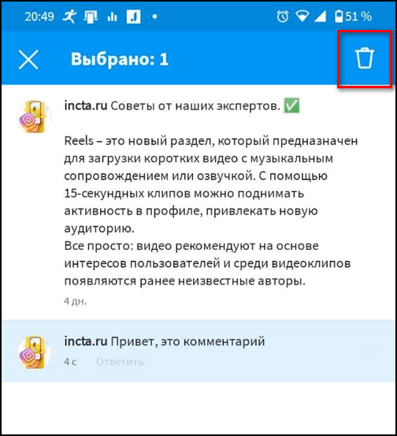
- Подтвердить удаление.
В течение первых секунд можно восстановить комментарий, если нажать по значку «Отменить». Под основным отзывом можно самостоятельно отправлять ответы, чтобы дополнить сообщение.
Если пользователь забыл, где оставлял комментарии:
- Зайти в Инстаграм* – Настройки.
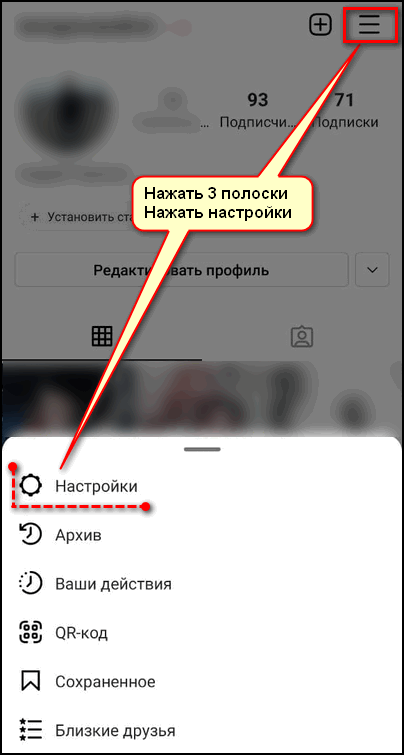
- Аккаунт
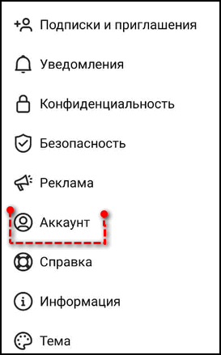
- Публикации, которые вам понравились.
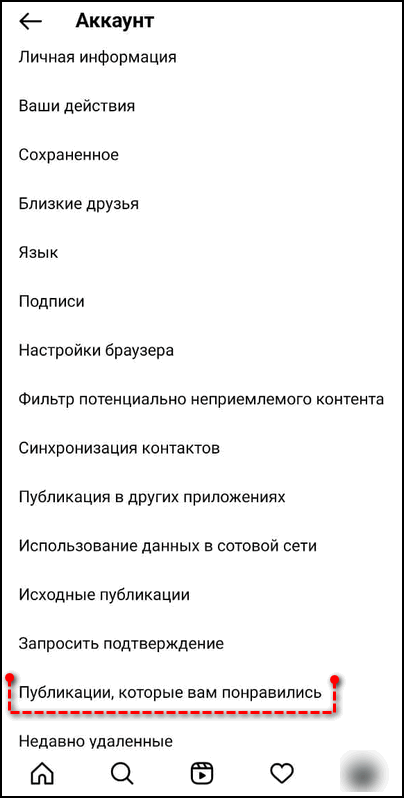
- Найти среди них пост, где мог быть оставлен комментарий.
Этот раздел предназначен для записей, на которые владелец страницы ставил лайк. Но если владелец профиля н оставлял отметок «Мне нравится», значит отыскать пост не получится.
Удалить комментарий через компьютер
С помощью ПК можно удалять свои предыдущие комментарии, которые были оставлены под публикациями. Как и в случае с телефоном, нужно найти пост, где был добавлен отклик и нажать функцию: «Удалить». Как убрать отзыв, воспользовавшись компьютерной версией:
- Зайти в Инстаграм* с помощью веб-формата.
- Перейти к разделу: «Уведомления».
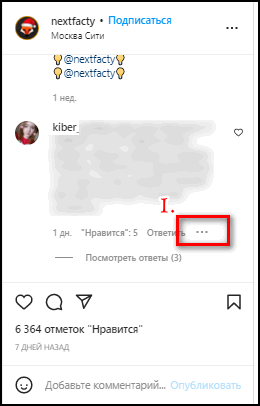
- Посмотреть, нет ли на комментарии ответов – перейти к публикации.
- Нажать рядом с текстом отправленного сообщения три точки.
- Выбрать функцию: «Удалить».
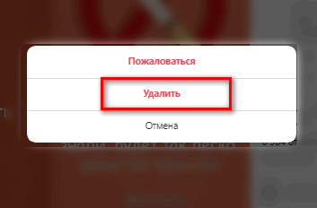
После, появится плашка с подтверждением действия. Такой вариант подходит, если владелец профиля забыл, где оставлял комментарий.
Как посмотреть все комментарии в Инстаграме*
Посмотреть удаленные комментарии в Инстаграме* не получится, зато пользователь сможет просмотреть все свои ранее оставленные отзывы. С помощью функции: «Скачать данные», можно прочесть ответы, которые были добавлены. Как посмотреть ранее опубликованные посты:
- Зайти в Инстаграм* – нажать по значку аватарки.
- Настройки – Конфиденциальность и безопасность.
- Скачивание данных – указать адрес электронной почты, который привязан к учетной записи.
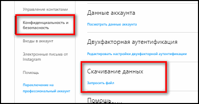
- Подождать, пока по указанному email придет сообщение.
Если пользователь выбрал архив, то ему придет папка, содержащая базовую информацию о владельце. Среди папок, пользователь найдет одну с названием «Comment», где в файле формата HTML доступен список всех отправленных комментариев.
Убрать чужой коммент в своем профиле
В своем аккаунте можно удалить чужие комментарии, которые мешают под публикациях, вызывают негатив у читателей или попросту не нравятся автору. Как убрать:
- Зайти в Инстаграм* – выбрать публикацию.
- Зажать по отзыву – нажать по кнопке в виде «корзины».
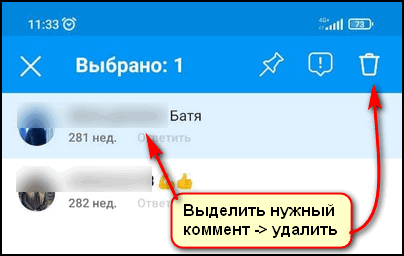
- Подтвердить удаление.
Те же действия можно выполнить с компьютерной версии, где пользователю нужно выбрать рядом с чужим комментарием «Удалить».
Автор отзыва не узнает, что удалили текст. Единственный вариант как проверить – посмотреть под самой публикацией, если снова перейти.
Пожаловаться на чужой ответ в Инстаграме*
В социальной сети есть второй вариант, как удалить чужой отклик – пожаловаться на него. Например, если владелец страницы заметил, что в тексте есть оскорбительные цитаты, выражения противоречащие правилам сообщества, то он может пожаловаться на текст. При жалобах от 10 штук комментарий могут заблокировали или скрыть от остальных читателей:
- Перейти к записи – нажать по тексту отклика.
- Выбрать сверху значок в виде «восклицательного знака».
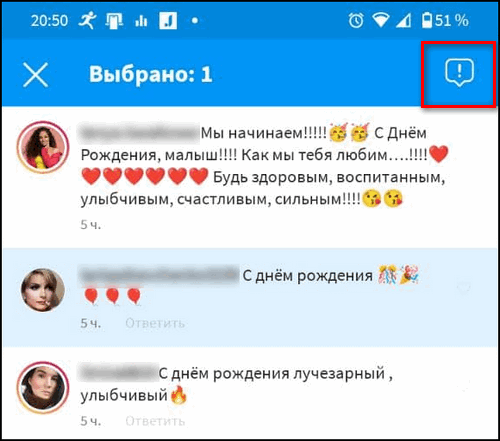
- Вариант: «Пожаловаться» - указать причину, которая соответствует тексту.
К примеру, если автор отклика призывает к насилию, расизму, дискриминации или делится чужими личными данными. В Инстаграме* также запрещено мошенничество и спам, который могут содержаться в комментариях.
Если на отклик пожалуется определенное количество читателей – его скроют. Он будет перемещен во вкладку: «Показать скрытые комментарии». Те, у кого не установлены фильтры, смогут их прочесть если повторно выберут эту функцию.
Запрет на комментирование
С помощью настроек конфиденциальности своего аккаунта можно настроить запрет на комментарии. В этом случае, оставлять отклики в профиле смогут друзья или посетители, которых выбрал автор блога. Установить полную блокировку на комментарии:
- Зайти в Инстаграм* – нажать «Настройки».
- Конфиденциальность – Комментарии.
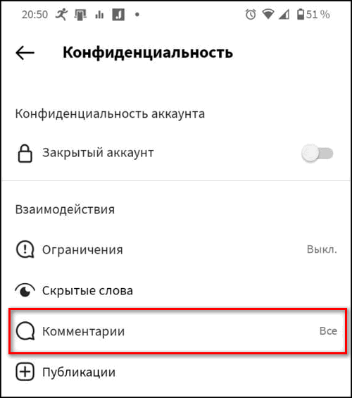
- Кто может комментировать – Никто.
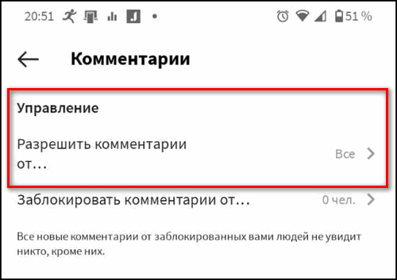
Или же, выбрать вариант: «Мои подписчики», «Друзья». Второй способ: скрыть возможность комментирования от определенного посетителя:
- Настройки – Конфиденциальность.
- Аккаунты с ограниченным доступом.
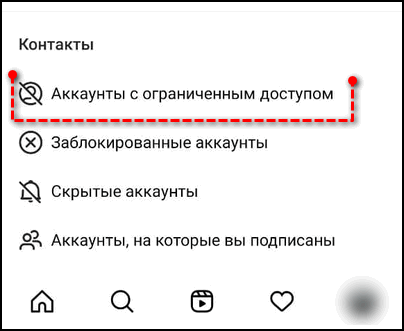
- Указать пользователя, которому запрещено оставлять комментарии -> подтвердить.
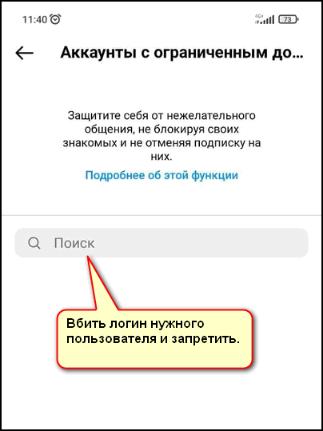
Этот человек сможет писать отклики, но никто кроме владельца страницы не сможет их прочесть. Также, автор не узнает, что его отзывы недоступны для просмотра.
Установить фильтр на комментарии
Наиболее простой способ, как избавиться от некоторых откликов – установить фильтр. Он срабатывает на слова и нецензурные выражения. Первый способ предполагает, что владелец профиля самостоятельно введет перечень запрещенных слов:
- Настройки – Конфиденциальность.
- Скрытые слова – перейти в раздел.
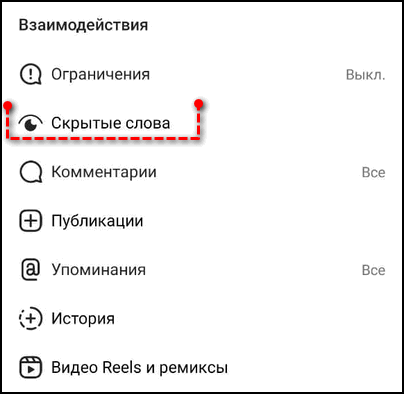
- Управлять списком.
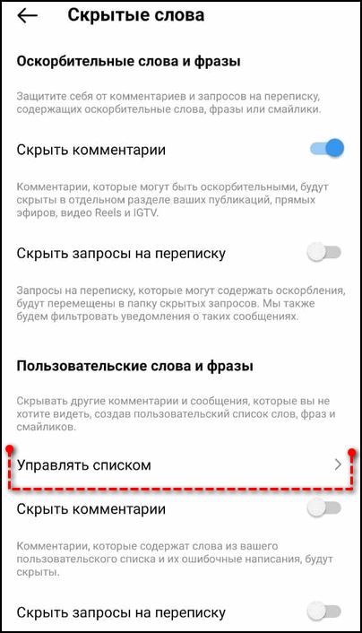
- Ввести цитаты и выражения, которые не должны быть в профиле.
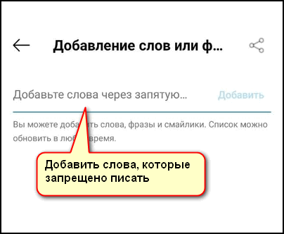
Второй метод – активировать функции: «Скрыть комментарии», который направлен на автоматическое удаление отзывов с нецензурными выражениями. Владелец профиля может дополнительно указать: «Убрать запросы на переписку», если часто поступают сообщения негативного характера.
Ограничение доступа к постам
Удалить комментарий на Айфоне или Андроиде возможно через поиск записи. Но если автор не хочет, чтобы к его публикациям появлялись новые отклики, нужно настроить параметры учетной записи. Способ первый: убрать отзывы на одной публикации:
- Зайти в список ранее опубликованных записей.
- Нажать сверху над постом три точки – Выключить комментарии.
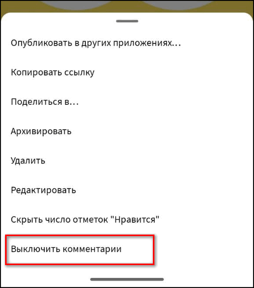
Теперь никто не сможет оставлять отклики под постами. Второй метод – воспользоваться опцией: «Закрытый аккаунт». В таком случае, только подписчики смогут оставить отклик, а владелец страницы вправе отписать тех, кто мешает.
Сделать аккаунт закрытым:
- Настройки – Конфиденциальность.
- Закрытый профиль – подтвердить.
Но в этом случае будет удалена «Статистика» и новые посетители не смогут посмотреть контент в профиле. Восстановив снова бизнес-статус или формат «Автор» аналитика не будет доступна по предыдущему периоду.